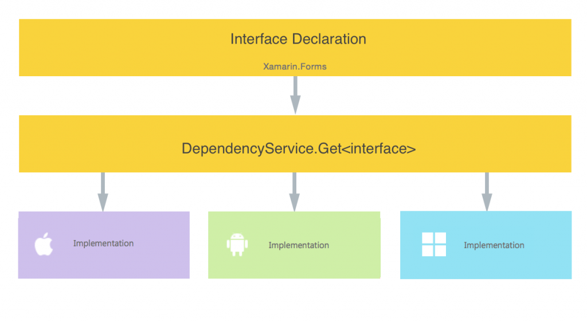

前回はAndroidで発生したUnizipped failedエラーを解決しました。
Problem
Xamarinにおいて、UIはXamarin.FormsをSharedまたはPCLプロジェクトに定義することで共通化を図っています。 しかしながら、デバイス固有の機能、例えば電話、カメラ、ファイル選択、指紋認証などは共通化されていません。 そのために、XamarinではXamarin.Forms.DependencyServiceクラスを利用して、共通コードからデバイス固有の機能にアクセスします。 Introduction to DependencyServiceに詳しく書いてありますが、ポイントは各プロジェクト (iOS、Android、UWP、Windows Phone)で同じinterfaceを実装し、その実装をDependencyServiceクラス経由で取得し、呼び出しているだけです。要するに、Dependency Injection (依存性の注入) です。 
{kind=link}
概要図 (https://developer.xamarin.com/guides/xamarin-forms/dependency-service/introduction/より引用)
今回は電話を使ってみようと思います。
Resolution
オープンソースでデバイス固有の機能をライブラリとして提供しているパッケージがあります。 XLabs - Forms(Github) Xamarin.Forms用の、クロスプラットフォーム向けに個別対応されたコントロール群とヘルパーのライブラリとのこと。 ですが、UWPの対応が良くない、というか大量にコメントアウトしてあって、どうも一時対応を休止しているような感じです。 また、最新版のソースだと、iOSのビルドに問題があるため、Androidしか使えない状態なので、自分で実装します。
注意
Xamarin.Forms
Xamarin.Formsを2.1.0.6529に更新してください。2.2に更新しないでください。 また、2.0.0.6482のままでもダメです。 さもなくば、Androidで下記のようなエラーが大量に出ます。 'Resource.Dimension' does not contain a definition for 'dialog_fixed_width_major' みたいなエラーです。 XLabs.Forms fails compilation with Xamarin Forms 2.2 versions という問題が提起されていますが、問題はXamarin.Fomrs側の問題とのこと。 もう少し動きがあるまでは更新はやめましょう。 2.1.0.6529ならエラーが起きない、という意見もありますし、私も、そのバージョンだと問題が発生しませんでした。
Xlabs
少し不安ですが、プレリリースバージョン2.0.5783-pﾚ01を使用してください。 さもなくば、UWPをビルドできません。
準備
各種プロジェクトに修正を加えます。
iOS
AppDelegate.csの下記の記述を [code lang=”csharp”] [Register(“AppDelegate”)] public partial class AppDelegate : global::Xamarin.Forms.Platform.iOS.FormsApplicationDelegate 下記のように修正します (usingは適宜追加)。 [code lang=”csharp”] [Register(“AppDelegate”)] public partial class AppDelegate : XFormsApplicationDelegate [/code]
Android
MainActivity.csの下記の記述を [code lang=”csharp”] [Activity(Label = “Xamarin.Forms.Portable5”, Icon = “@drawable/icon”, MainLauncher = true, ConfigurationChanges = ConfigChanges.ScreenSize | ConfigChanges.Orientation)] public class MainActivity : global::Xamarin.Forms.Platform.Android.FormsApplicationActivity [/code] 下記のように修正します (usingは適宜追加)。 < pre class=”lang:c# decode:true “ > [Activity(Label = “Xamarin.Forms.Portable5”, Icon = “@drawable/icon”, MainLauncher = true, ConfigurationChanges = ConfigChanges.ScreenSize | ConfigChanges.Orientation)] public class MainActivity : global::Xamarin.Forms.Platform.Android.FormsApplicationActivity [/code]
UWP
現在、githubでも問題になっており、XLabs.Forms.WinUniversal.dllとXLabs.Platform.WinUniversal.dllがNugetで参照できなくなっています。 ですので、githubからソースをクローンしてビルドして参照します。 その後、App.xaml.csの下記の記述を [code lang=”csharp”] if (rootFrame == null) { // Create a Frame to act as the navigation context and navigate to the first page rootFrame = new Windows.UI.Xaml.Controls.Frame();
rootFrame.NavigationFailed += OnNavigationFailed;
Xamarin.Forms.Forms.Init(e);
if (e.PreviousExecutionState == ApplicationExecutionState.Terminated) { //TODO: Load state from previously suspended application }
// Place the frame in the current Window Window.Current.Content = rootFrame; } [/code] 下記のように修正します (usingは適宜追加)。 [code lang=”csharp”] if (rootFrame == null) { // Create a Frame to act as the navigation context and navigate to the first page rootFrame = new Windows.UI.Xaml.Controls.Frame();
rootFrame.NavigationFailed += OnNavigationFailed;
var app = new XLabs.Forms.XFormsAppWin(); app.Init(this);
Xamarin.Forms.Forms.Init(e);
if (e.PreviousExecutionState == ApplicationExecutionState.Terminated) { //TODO: Load state from previously suspended application }
// Place the frame in the current Window Window.Current.Content = rootFrame; } [/code]
共通
各プロジェクトのスタートアップコードに下記の記述を追加します。 基本は、前述の付近と同じです。 AppDelegate.cs (iOS) [code lang=”csharp”] public override bool FinishedLaunching(UIApplication app, NSDictionary options) { global::Xamarin.Forms.Forms.Init(); LoadApplication(new App());
var container = new SimpleContainer(); container.Register(t => AppleDevice.CurrentDevice); container.Register(t => new MediaPicker());
Resolver.SetResolver(container.GetResolver());
return base.FinishedLaunching(app, options); } [/code] MainActivity.cs (Android) [code lang=”csharp”] protected override void OnCreate(Bundle bundle) { base.OnCreate(bundle);
var container = new SimpleContainer(); container.Register(t => AndroidDevice.CurrentDevice); container.Register(t => new MediaPicker());
Resolver.SetResolver(container.GetResolver());
global::Xamarin.Forms.Forms.Init(this, bundle); LoadApplication(new App()); } [/code] Appxaml.cs (iOS) [code lang=”csharp”] public override bool FinishedLaunching(UIApplication app, NSDictionary options) { global::Xamarin.Forms.Forms.Init(); LoadApplication(new App());
var container = new SimpleContainer(); container.Register(t => AppleDevice.CurrentDevice); container.Register(t => new MediaPicker());
Resolver.SetResolver(container.GetResolver());
return base.FinishedLaunching(app, options); } [/code]
Conclusion
Windows7、Windows10と2つの環境で発生しています。私だけの環境だとは思えないのですが…